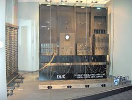

ENIAC - первый электронный компьютер
ENIAC (Electronic Numerical Integrator and Computer) был создан в 1945 году и считается первым электронным компьютером общего назначения. Этот гигант занимал целую комнату размером 9×15 метров и весил 27 тонн!
Основные характеристики:
- Год создания: 1945
- Размеры: 30 метров в длину
- Вес: 27 тонн
- Элементная база: 17,468 электронных ламп
- Потребляемая мощность: 150 кВт
- Тактовая частота: 100 кГц
- Производительность: 357 операций умножения в секунду
- Память: 20 аккумуляторов по 10 десятичных разрядов
ENIAC разрабатывался для решения задач баллистики Армии США. Программирование осуществлялось путем переключения кабелей и установки переключателей, что занимало дни и даже недели. Несмотря на свои размеры, его вычислительная мощность была меньше, чем у современных калькуляторов.
